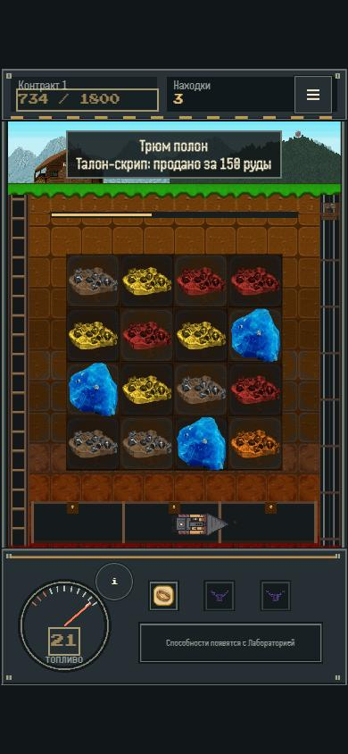
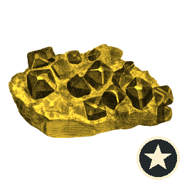
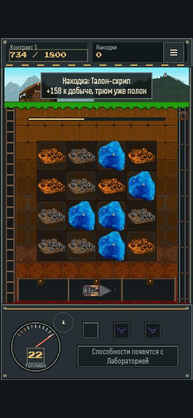
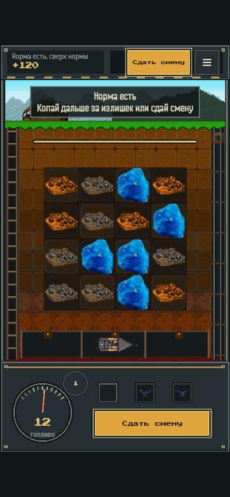
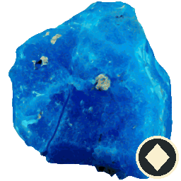
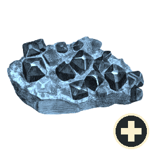
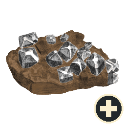
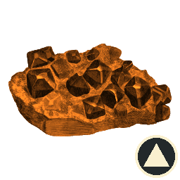

Лекция для геймдева
Как один человек с агентом собрал мобильную игру и что из этого взять в свою команду

Начнём с истории
«Трюм полон». Как думаете, что они решили?
Что у них что-то отобрали. На деле добыча уже засчитана. Нашёл это не человек, а пять агентов, которые играли за новичков







I Dig It: Pixel Mine
Три в ряд про шахту в Техасе 1889 года. Двенадцать контрактов, база, флот и сюжет
Прототип за вечер. Играбельное поле с агентом собирается за один вечер, а не за спринт
Вчера
Умный друг в телефоне: советует, но посуду не моет
Сегодня
Стажёр с доступом ко всему: делает сам, иногда уверенно не то
Сейчас
Работает по кругу с проверками, пока не выполнит условия
«Клетки на телефоне мелкие, палец промахивается»
Даёт кусок кода и совет
Вы ищете, куда его вставить
Сами собираете и запускаете
Сломалось что-то рядом. Снова в чат
Работаете вы, чат подсказывает
Сам находит нужный файл и меняет
Прогоняет все тесты игры
Открывает её на девяти размерах экрана
Присылает скриншоты и что поменял
Работает агент, вы принимаете
Хватит чата
Один вопрос, один ответ
Идеи и мозговой штурм
Переписать письмо или абзац
Нужен агент
Много шагов подряд
Работа в файлах, программах, браузере
Результат можно проверить
Простой тест: если после ответа чата вы ещё полчаса делаете всё руками, это задача для агента
Так в Pixel Mine идёт любая правка, от запятой до новой системы
Не прошло? Ещё круг. Агент чинит и проверяет сам
Выход только по условиям готовности, записанным заранее
Как стиральная машина: пока не постиралось, крутим ещё
1 Понять
2 Тест
3 Изменить
4 Проверить
5 Показать
6 Записать
Памятка новичку в команде
Рецепт задачи и когда она готова
Руки: файл, тест, браузер
Команды в терминале: git, сборка, тесты одной строкой
Розетка для Construct, Figma, почты
Набор в коробке одним пакетом
Друг, который отберёт телефон в два ночи
Собирает всё это в работу до результата
В быту
Найди мне отпуск в мае
Бюджет, море, без пересадок
Сравнил билеты и отели
Сверил с календарём
Ждёт вашего «да». Тур в Воркуту сам не купит
В разработке
Норма в одном файле с числами
Бот играет тысячи раз, даёт процент
Тесты и сборка, ничего не сломано
Бот проходит смену в движке
Что поменялось и почему
Кто узнал свою рутину?
Геймдизайн
Прогнать уровень ботом тысячу раз
Арт
Разложить ассеты, проверить лицензии
QA
Пройти экраны на всех телефонах
Нарратив
Вычитать тексты по правилам стиля
UX
Симулировать новичков до живого теста
Продюсер
Сводка: сделано, сломано, ждёт решения
Семь ступеней. Нашли проблему? Возвращаемся на ту ступень, где она родилась
1
Задача
2
Ресёрч
3
Процесс
4
Прототип
5
MVP
6
Ревью
7
Запуск
Задача
Бриф и дизайн-документ
Ресёрч
Шрифты, руды, клетка, лор 1889
Процесс
Правила, 8 скиллов, Spec Kit
Прототип
Поле, ход, спецфишки, тесты
MVP
Кампания, база, флот, сюжет
Ревью
Телефоны, движок, новички
Запуск
Пакет игры и живой тест
Ревью
Ресёрч
Клетка 33 px. Нашли норму 44 px, поле растёт с 4×4 до 7×7
Ревью
MVP
«Трюм полон» пугает. Текст переписали: добыча засчитана
Прототип
Задача
Бот не берёт норму. Нормы пересчитали симуляцией
Возврат на ступень вверх входит в обычную работу лестницы
Голосуем
А. Бота
Б. Игру
Игру. Бот играет как средний игрок. Если он не справляется, новичок бросит на первом же уровне. Нормы снизили
Галина, 68
Пенсионерка, узкий Android
Тимур, 12
Brawl Stars и Roblox
Ольга, 35
Royal Match и Homescapes
Артём, 26
Стратегии и idle
Сергей, 47
Дальтоник, играет одной рукой
Разный возраст и опыт. Каждый смотрит скриншоты первого захода и говорит, где испугался
Чиним, если назвали двое. Живой тест всё равно проводит человек
Одна команда git, и правки двух файлов пропали. Переделывал заново
Дважды пытался закоммитить в открытый репозиторий скачанные паки ассетов
Пиксельный шрифт, в котором кириллица читалась с трудом. Заменили
Поэтому строим проверки, не надеемся на доверие!
Агент ошибается уверенно. Проверки стоят там, где он не может их обойти
10 партий кадр за кадром
В сборке только игра
Код-ревью без обид и без пятницы
Решает необратимое
1
Запишите правила проекта в один файл, который прочитает и агент, и новичок
2
Для повторяющейся задачи напишите рецепт с условием «готово, когда»
3
Поставьте проверку, которую агент не может пропустить
4
Оставьте человеку решения, которые нельзя отменить
И не давайте агенту доступ к бухгалтерии. Пока еще.
| Слово | Простыми словами |
|---|---|
| CLI | Программа, которой управляют командами в терминале |
| Golden master | Записанный эталон поведения, с которым сверяют новое |
| Loop engineering | Проектирование круга работы агента и условия выхода |
| MCP | Стандартная розетка для подключения программ к агенту |
| MVP | Самая маленькая версия, которую уже можно дать людям |
| PRD | Документ: что делаем, для кого и как поймём, что вышло |
| Агент | ИИ, который сам делает шаги, а не только отвечает |
| Инструмент | Действие агента: прочитать файл, запустить, открыть |
| Ограничитель | Проверка, которую агент не может обойти |
| Слово | Простыми словами |
|---|---|
| Персона | Агент, который играет за выдуманного игрока |
| Плагин | Скиллы и розетки одним пакетом |
| Правила | Файл с памяткой о проекте, агент читает его первым |
| Прототип, PoC | Быстрая проверка, что идея вообще работает |
| Ресёрч | Проверка, решалась ли задача раньше и как |
| Скилл | Рецепт одной задачи с шагами и критерием готовности |
| Субагент | Второй агент для отдельной задачи или свежего взгляда |
| Хук | Проверка, которая срабатывает сама в нужный момент |
| Чат | ИИ, который отвечает, а делаете вы |
Весь проект открыт: код, скиллы, ресёрч и история коммитов
github.com/aa-blinov/i-dig-it-pixel-mine